Modeling
Aims
In our project, E.coli BL21 is engineered to produce spidroin by protein expression. As there’re many types of spidroin and each has its specific alternative properties, we can make silks with different usage and properties by controlling the production of spidroins.
We aimed to achieve this target by proportional expression, while each recombinant plasmid contains independent inducible promoters. The gene expression thus the percentages of spidroins can be controlled by adjusting the concentrations of different inducers, IPTG and arabinose.
To estimate the product amount, we use MATLAB Simbiology for simulating the proportional expression. The relationship between product and inducer can be revealed by equations introduced and the concentration-time graph plotted. By developing models using Michaelis-Menten kinetics and mass actions kinetics, reactions between inducer and repressor can be shown and thus illustrated proportional gene expression.
For simulations of both inducers, at t=0, 0.005M of inducers and a largely excess amount of DNA binded with the corresponding depressor are invested. The simulation was then run for 10 hours. The amounts of the inducers invested at the beginning were then changed and the simulations were performed again. By repeating the above steps, standard curves showing the relationship between inducers and protein concentration can then be obtained.
Abbreviations
| abbreviation | meaning | value | unit | reference |
|---|---|---|---|---|
| Kia | Rate constant of forward reaction in IPTG association | 1.1e-5 | M-1s-1 | [1] |
| K-ia | Rate constant of backward reaction in IPTG association | 0.3 | s-1 | [1] |
| Kaa | Rate constant of forward reaction in arabinose association | 2.4e-7 | M-1s-1 | [2] |
| K-aa | Rate constant of backward reaction in arabinose association | 1.5 | s-1 | [2] |
| Vmax | maximum rate achieved by the system | 1000 | sugars/protein/min | [6] |
| KM | substrate concentration at which the reaction rate is half of Vmax | 300 | μM | [6] |
| Ktrc | Rate constant of transcription | 2.4 | μM-1min-1 | [3] |
| Ktrl | Rate constant of translation | 6e4 | M-1s-1 | [4] |
| Kde | Rate constant of mRNA decay | 0.0173 | s-1 | Decay constant =ln2/40 [5] |
Reactions
We have introduced 4 equations for each inducer, IPTG and arabinose. The reaction(F) uses Michaelis-Menten kinetics as the model, while the remaining use mass actions kinetics. The differential equations of each component will be mentioned in the next session.

Equations
The equations introduced are listed as follows:
modelling equation ODE(arabinose).jpg)
modelling equation ODE(IPTG).jpg)
Matlab
| inducers concentration | iptg | arabinose |
|---|---|---|
| 0M | 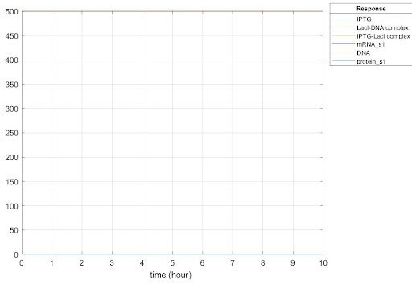 | 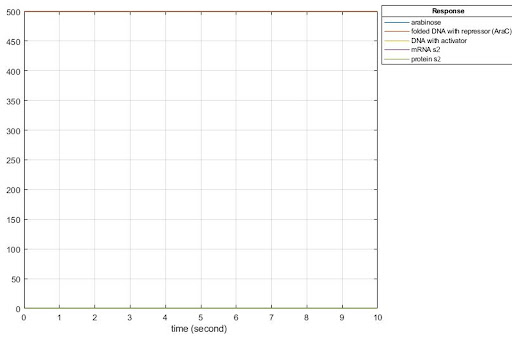 |
| 0.001M | 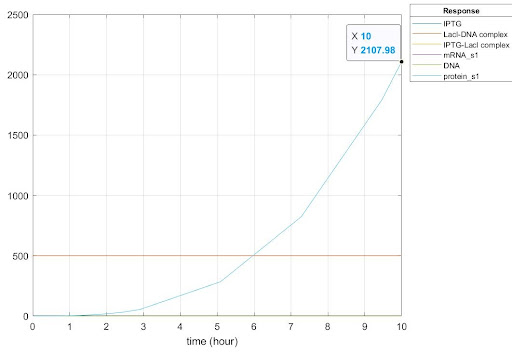 | 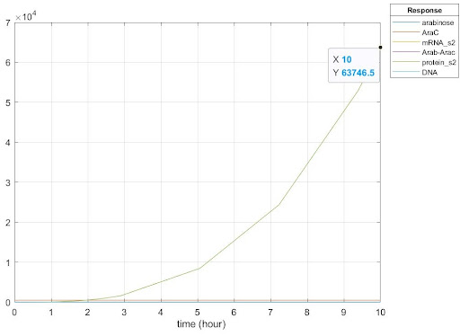 |
| 0.002M | 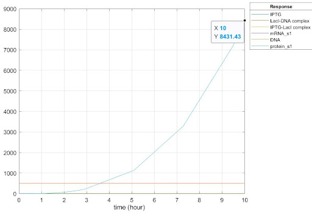 | 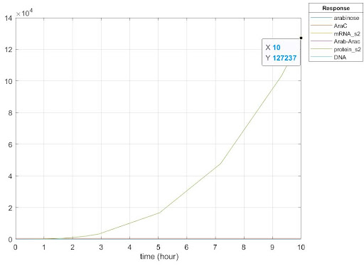 |
| 0.003M | 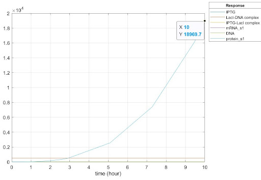 | 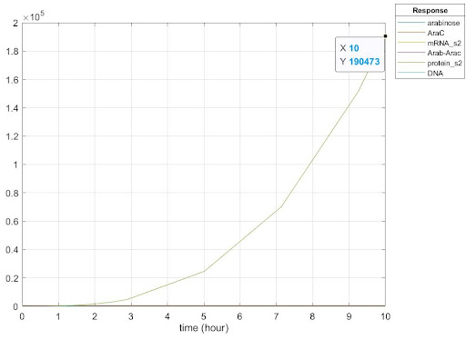 |
| 0.004M | 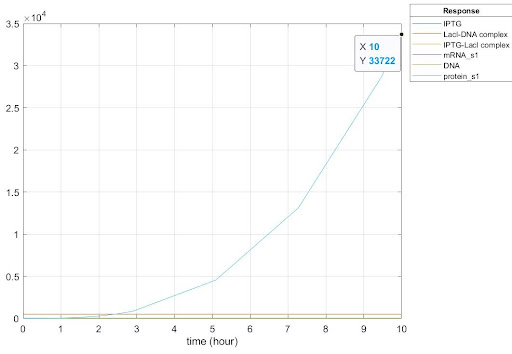 | 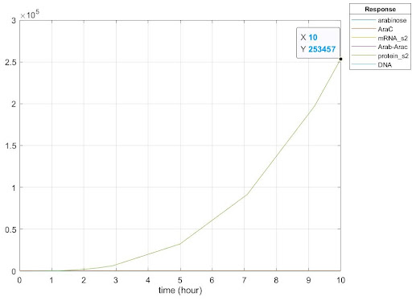 |
| 0.005M | 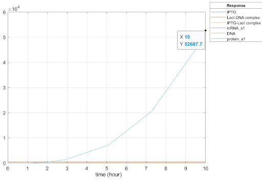 | 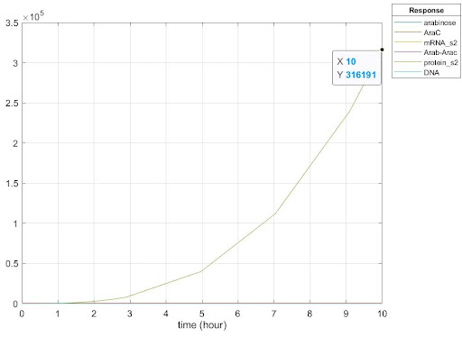 |
Reference
- Jia Xu and Kathleen S. Matthews. (2009, 6 9). Flexibility in the Inducer Binding Region is Crucial for Allostery in the Escherichia coli Lactose Repressor. Biochemistry
- Miller, D. M. (1983, 11 25). Rates of Ligand Binding to Periplasmic Proteins Involved in Bacterial.THE ,JOURNAI. OF BIOLOGICAL CHEMISTRY.
- Philipp Thomas, Hannes Matuschek. (2012, 12 24). Computation of biochemical pathway fluctuations beyond the linear noiseapproximation using iNA. IEEE International Conference on Bioinformatics and Biomedicine (BIBM).
- Hermioni Zouridis, Vassily Hatzimanikatis. (2007, 2 1). A Model for Protein Translation: Polysome Self-Organization Leads to Maximum Protein Synthesis Rates. Biophysical Journal.
- S Pedersen, S Reeh. (1978, 11 9). Functional mRNA half lives in E. coli. Mol Gen Genet.
- Fritz, G. (2012, 2 15). Strategies of Bacterial Gene Expression: Regulatory Mechanisms and Functional Aspects. Munich.